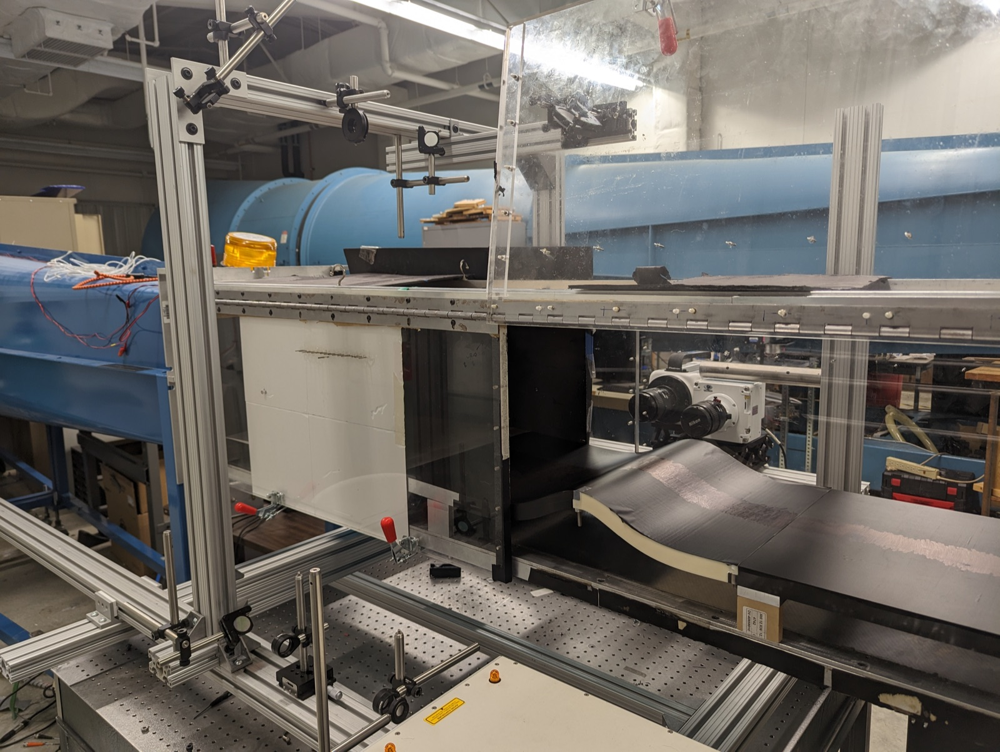
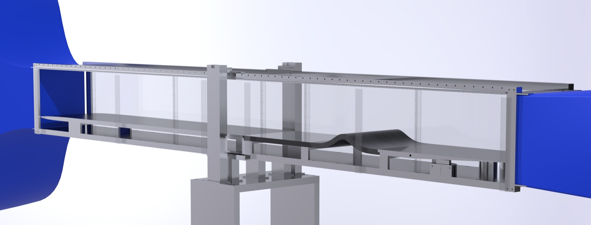

Akhileshwar
Borra
Experimental fluid dynamics & wind energy. Above: our field setup, with bubble paths from a particle simulation drifting through a turbine's tip vortices.
Measuring turbulence from the wind tunnel to the wind farm.
I'm a postdoctoral researcher in the Turbulence and Wind Energy group at the Max Planck Institute for Dynamics and Self-Organization. I build measurement systems that follow the flow, from helium-filled soap bubbles in the tip vortices of a full-scale turbine to drone-launched balloons drifting through wind farms, to understand how wind turbines interact with the atmosphere.


Wind tunnels can't recreate the atmosphere, so we take the experiment to the turbine.


In theField
Full-scale measurements at operating wind turbines and wind farms, where the inflow is real atmospheric turbulence.

In theLab
Controlled wind tunnel experiments, from pressurized rotor testing to boundary layers, wakes and the methods to analyze them.
- Rotor performance at high Reynolds number 2025 –
- Turbulent boundary layer separation 2019 – 24
- Modal analysis for fluid flows 2020 – 25
- Propeller wakes 2021 – 23

Selected
projects
Six projects across field campaigns, wind tunnels and data analysis, each with figures, methods and the papers behind them.


Publications
Journal papers, conference papers and my dissertation.
-
2026DOI ↗A Lagrangian tracer system using balloons to study wind farm interactions with the atmospheric boundary layerA. Borra, F. Falkinhoff, M. Grunwald, G. Bagheri, E. Bodenschatz, C. E. BrunnerJournal of Physics: Conference Series (TORQUE)
-
2025DOI ↗Intrinsic phase-based proper orthogonal decomposition (IPhaB POD): a method for physically interpretable modes in near-periodic systemsA. Borra, Z. Flynn, A. Goza, T. Saxton-FoxJournal of Fluid Mechanics
-
2024Turbulent boundary layer separation and its driving factorsA. BorraPhD dissertation, University of Illinois Urbana-Champaign
-
2024Comparison of a turbulent boundary layer encountering a ramp versus a bumpA. Borra, T. Saxton-FoxTurbulence and Shear Flow Phenomena (TSFP)
-
2023DOI ↗Design of propellers with passive mitigation of coherent tip vortex roll-upT. Kopperstad, A. Borra, A. Beusse, C. Kim, E. Torres De Jesus, T. Saxton-Fox, P. AnsellAIAA SciTech Forum
-
2022DOI ↗Proper orthogonal decomposition for a turbulent boundary layer with aero-optic distortionA. Borra, T. Saxton-FoxAIAA Journal
Career
From valve qualification for the F/A-18 to field campaigns at wind turbines.